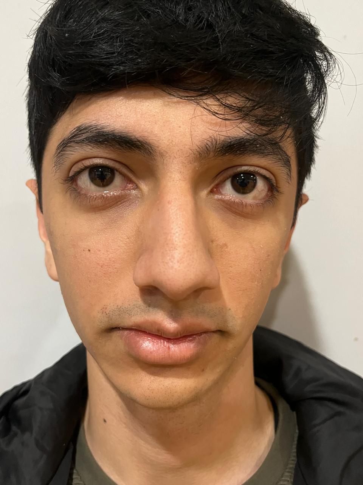
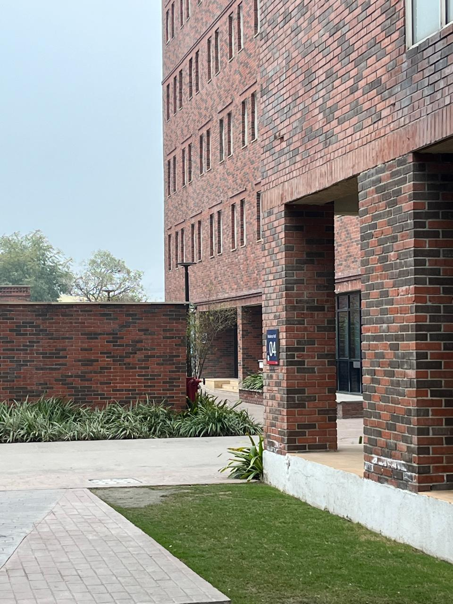
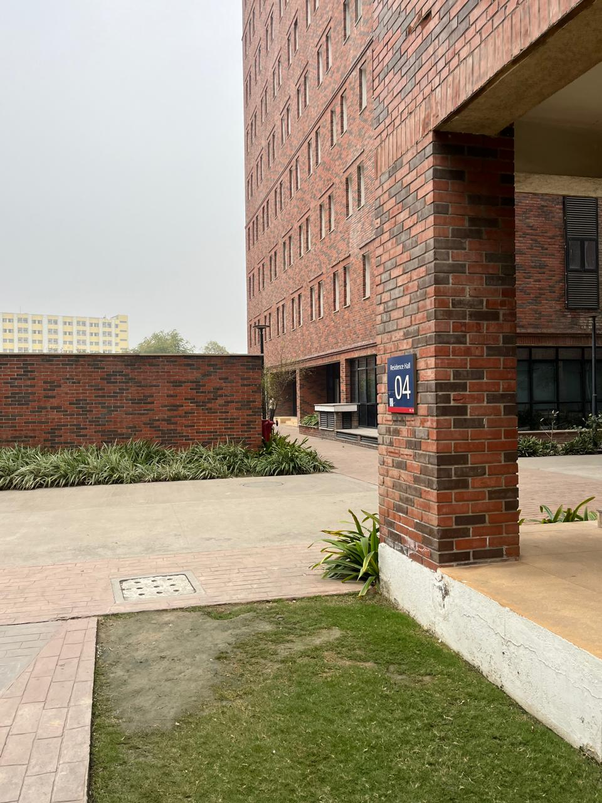
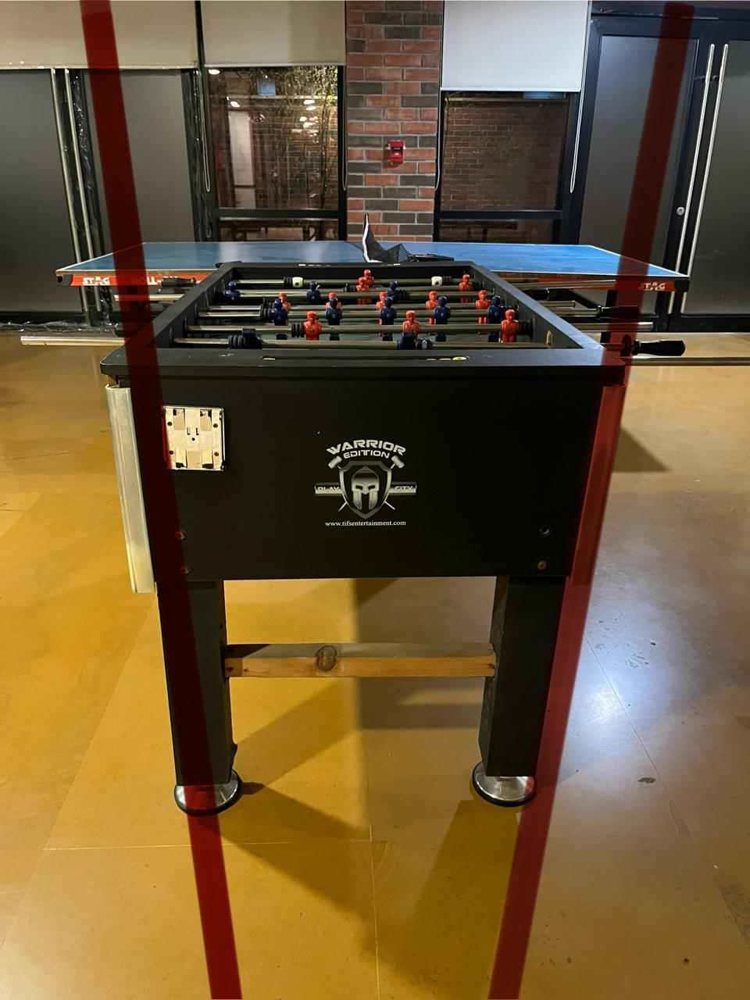
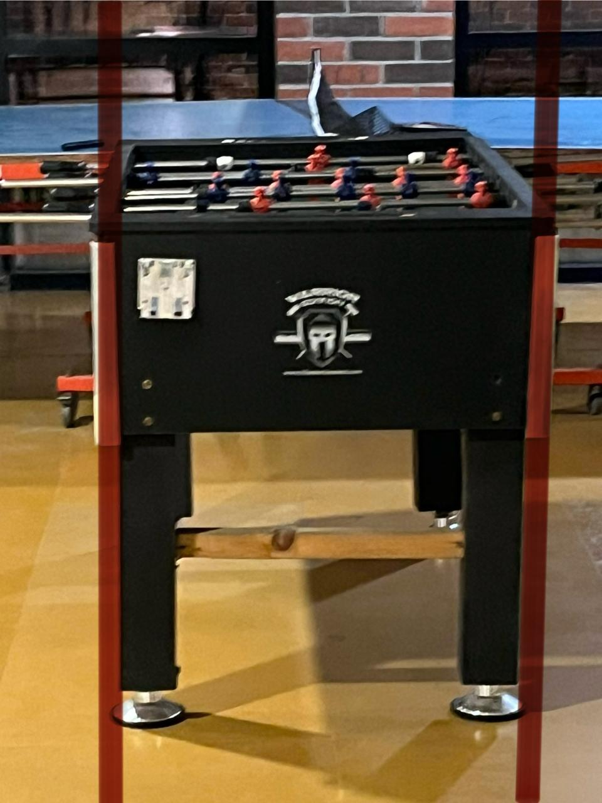

Photo A
Close Distance
Camera near the subject with no zoom, producing stronger geometric exaggeration.
Photography and Perspective
This assignment studies how camera position changes perceived geometry. The comparisons below show portrait distortion, telephoto compression, and the visual difference between perspective and orthographic-style views.
Overview
The central lesson is consistent across all three comparisons: distance changes perspective, while zoom primarily changes framing.
Part 01
A close camera exaggerates facial depth, while stepping back normalizes proportions.

Camera near the subject with no zoom, producing stronger geometric exaggeration.

The camera moves farther away and zoom compensates for framing, preserving natural proportions.
In the first image, the subject is very close to the camera, so the nose is much nearer to the lens than the ears. That distance difference stretches the face and creates visible distortion.
In the second image, moving the camera back reduces relative depth differences across the face. Zoom restores framing, but it does not create the perspective change by itself.
Part 02
Comparing a distant telephoto view with a closer, more natural street perspective.

A longer shooting distance makes foreground and background appear visually compressed.

Moving closer restores stronger separation between objects and reveals natural spatial depth.
The distant telephoto view reduces the apparent spacing between objects because everything lies at roughly similar depth from the lens. This creates the compressed look often associated with long focal lengths.
When the camera moves closer, differences in object distance become more pronounced. The scene gains depth and layering, which is more faithful to how the space feels in person.
Part 03
Perspective projection conveys depth, while orthographic-style views preserve parallel edges.

Parallel lines converge toward vanishing points and create a stronger depth cue.

Parallel structure is preserved, which simplifies interpretation in technical contexts.
Perspective projection matches everyday camera imaging, so lines that are parallel in the world may converge in the image. This is crucial in computer vision because the camera model must account for those projective effects.
Orthographic-style projection suppresses convergence and is often easier to analyze for measurement and drafting. It provides a useful contrast when studying camera geometry and scene interpretation.